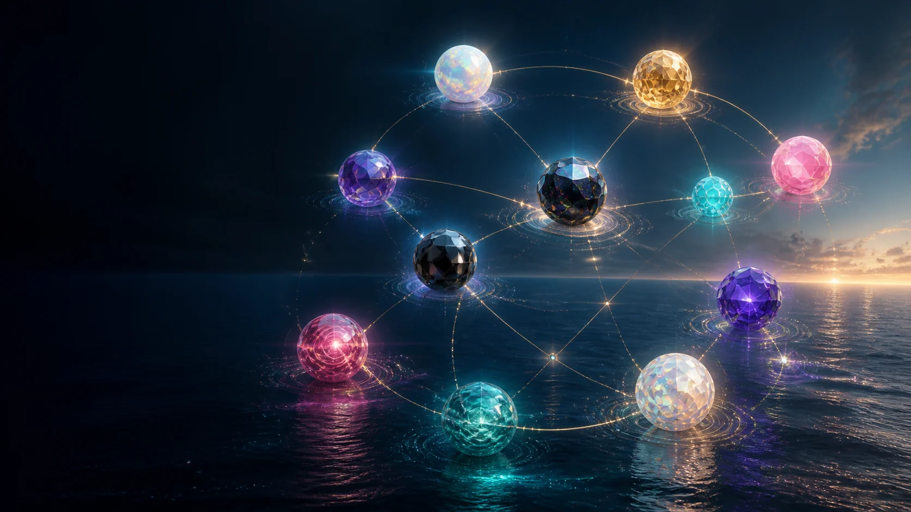

Shared wellbeing close to home
Explore warmth, rest, supervised care relationships, shared access and the public record beside them.

Ten project worlds hold co-operative ideas, shared wellbeing, personal digital life, music, evidence and regional relationships. This eleventh doorway gathers them in one clear view.
Imagined concept artwork
Begin anywhere. Wander by curiosity, follow a familiar theme or move through the numbered story. Every page opens into the others without placing one person's journey above another.
The Site Map is a people-friendly guide to the whole public project. A separate machine-readable map supports search services.
Full page names and short descriptions sit together here, including this guide.
These are guideposts rather than fixed routes. Each line begins with a different interest.
Explore warmth, rest, supervised care relationships, shared access and the public record beside them.
Follow local purpose, membership, ownership, affordability and place-specific agreements.
Meet the owner-held digital twin, its birth and repair story, and the research ideas around it.
Explore the imagined structure, personal atmosphere, reflection environment and open engineering questions.
Move through the divine digital twin's birth, Kintsugi self-repair and the hyperbaric oxygen therapy story, with art and health evidence kept distinct.
See the source trail, unresolved details, project family, public boundaries and licence.
Established information, working proposals, future research and open details remain visibly distinct across the site.